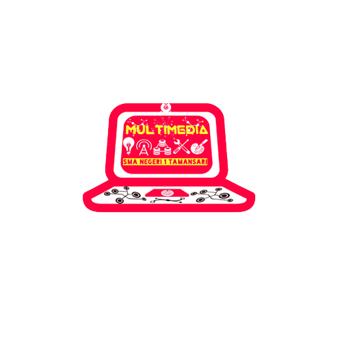

Sejarah Multimedia Sman 1 tamansari
Ekskul ini didirikan pada 23 Oktober 2017 dan Ketua umum yang pertama adalah Rizki Agung s .Pada awal nya multimedia hanya sebuah kelompok kecil yang memiliki Bakat di bidang teknologi dan berharap suatu saat nanti akan menjadi ekstrakurikuler yang bisa membantu dan menjadikan sekolah lebih baik lagi dalam perkembangan IPTEK.
Dulu setiap perkumpulan pasti akan Muncul ide-ide kreatif agar Multimedia ini bisa menjadi ekskul maka setiap perkumpulan kita selalu menggunakan Laptop untuk mencatat dan melaksanakan apa yang kita pikirkan.contoh nya saja dulu multimedia sempat membuat trailer film dan aplikasi sekolah untuk digunakan oleh para siswa siswi sma negeri 1 tamansari.
Lalu kami Bangkit dan terus berusaha sekeras mungkin agar harapan kami terwujud untuk menjadikan multimedia ini sebagai salah satu ekskul di sma negeri 1 tamansari. Seiring berjalannya waktu , Multimedia pun terus berkembang dan mulai diapresiasi oleh guru.
Tetapi tidak semudah itu untuk menjadikan multimedia sebagai ekskul di sma negeri 1 tamansari, karna banyak sekali yang harus kita persiapkan mulai dari kepengurusan , Pembina dan visi misi . Lalu mulai lah kami membangun multimedia agar bisa memenuhi persyaratan tersebut.
Pertama kami mencoba merancang kepengurusan dan pada saat itu memang kami semua sempat kebingungan untuk memilih siapa yang pantas menjadi ketua umum di multimedia,setelah kita berdiskusi hampir selama 1 minggu lama nya dan kepengurusan pun terlaksana . akhir nya Multimedia memiliki kepengurusan yang pada saat itu memang masih perlu banyak perbaikan.
Kedua kami mulai mencari Pembina yang pantas untuk berada di Multimedia , dan akhirnya ada juga Pembina yang cocok dan siap untuk bergabung dalam multimedia ini.
Ketiga kami mulai bersama sama membuat visi dan misi untuk multimedia.
Dan ini lah visi-misi multimedia :
Visi :
- Menyiapkan siswa yang memiliki pengetahuan dan keterampilan di bidang informatika sesuai dengan perkembangan ilmu pengetahuan teknologi, berkepribadian baik dan ber akal.
Misi :
- 1.Menyelenggarakan pendidikan dan ekstrakurikuler Multimedia yang berkualitas Tinggi.
- 2.Mempromosikan pendidikan dan ekstrakurikuler multimedia yang berlandaskan etika,kemandirian dan kreatifitas dalam bidang teknologi.
- 3.mempromosikan hasil kinerja multimedia dan memberikan motivasi kepada siswa untuk terus maju di bidang IPTEK.
- 4.Menyediakan pelayanan yang baik kepada siswa dalam bidang multimedia dan memberikan pengaplikasian multimedia yang baik dan benar .
Dan setelah semua persyaratan kami terpenuhi lalu multimedia pun melakukan presentasi di Ruang guru untuk menyampaikan aspirasi nya.
Lalu sejak saat itu juga kami mulai berkontribusi disekolah seperti membantu guru guru yang kesusahan atau memiliki problem dalam masalah iptek.
Setelah sekian lama menunggu akhirnya Multimedia disetujui oleh pihak sekolah dan menjadi salah satu ekskul di sma negeri 1 tamansari.
